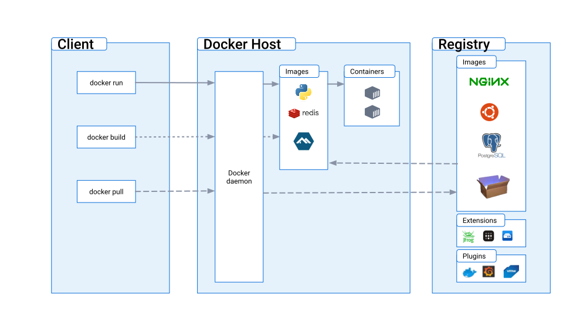

Docker Tutorial
Baozhe Zhang (å¼ å®å“²)
Date: July 10, 2023
Empowering Your Robotics Research
With
## Contents - Introduction - What is Docker? - Why/When you should use it? - Case study 0: Setup a containerized development environment (including GUI application) - Case study 1: Containerized simulation on a single machine - Case study 2: Test your application's parameters with distributed simulation <aside class="notes"> 主要有四部分 有三个 case study </aside>
## 🧠What is Docker - A light-weight virtual machine? - Docker image v.s. bootable OS image? - Docker container v.s. runtime virtual machine? <aside class="notes"> æœ‰å‡ ä¸ªé—®é¢˜ 是轻é‡çš„è™šæ‹Ÿæœºå— docker的镜像和普通的镜像有什么区别 docker的容器和运行时的虚拟机又有什么区别 </aside>
### 🤓 Virtual Machine v.s. Docker <img class="current-visible" src="images/docker_vm.png" width="100%" /> <aside class="notes"> 操作系统 </aside>
### 🤓 Docker Image <img class="current-visible" src="images/docker_vm.png" width="50%" /> > A Docker image is an <span style="color:red">**isolated filesystem**</span> containing all dependencies, configurations, scripts, binaries, etc for your container application. <aside class="notes"> 没有额外的boot启动的东西 </aside>
### 🤓 Docker Container <img class="current-visible" src="images/docker_vm.png" width="50%" /> > A container is a <span style="color:red">**sandboxed process**</span> on your machine that is <span style="color:red">**isolated**</span> from all other processes on the host machine. <aside class="notes"> 只是一个沙盒的进程，比如bash，当然这个进程也可以fork出很多å进程 </aside>
### 🤓 Docker Architecture  <aside class="notes"> client-server </aside>
### 🤠Why / When to use it? - Build once and deploy N times - Multiple physical robots - Distributed computation (simulation) - Need to setup a complex programming environment - ROS, OpenCV, pytorch, boost, ... all needed - Package "pollution" - Feature test for third-party packages - Avoiding "polluting" you system dependencies (apt) - ...
## 👶 Case study 0: <br>Setup a containerized development environment (including GUI application) - Gazebo simulation - <span style="color:gold">`docker xxx`</span> commands - Dockerfile and <span style="color:gold">`docker build`</span> - GUI application workaround
### 👶 Get a remote image via <br><span style="color:gold">`docker pull`</span> We will use the official ROS image as our base image. ```text $ docker pull osrf/ros:noetic-desktop-full ```
### 👶 (0) Run it via <br><span style="color:gold">`docker run`</span> ```text $ docker run --rm -it --name ros osrf/ros:noetic-desktop-full bash --rm -> the container will be removed -it = -i -t -i -> interactive -t -> pseudo tty --name -> assign a name bash -> the init process ```
### 👶 (1) Run it via <br><span style="color:gold">`docker run`</span> Expected prompt: ```bash root@44648b1a5b07:/# ``` Run an app (GUI failed) ``` root@44648b1a5b07:/# gazebo --verbose Gazebo multi-robot simulator, version 11.11.0 Copyright (C) 2012 Open Source Robotics Foundation. Released under the Apache 2 License. http://gazebosim.org [Msg] Waiting for master. Gazebo multi-robot simulator, version 11.11.0 Copyright (C) 2012 Open Source Robotics Foundation. Released under the Apache 2 License. http://gazebosim.org [Msg] Waiting for master. [Msg] Connected to gazebo master @ http://127.0.0.1:11345 [Msg] Publicized address: 172.17.0.2 [Err] [RenderEngine.cc:749] Can't open display: [Wrn] [RenderEngine.cc:89] Unable to create X window. Rendering will be disabled [Wrn] [RenderEngine.cc:292] Cannot initialize render engine since render path type is NONE. Ignore this warning ifrendering has been turned off on purpose. [Msg] Loading world file [/usr/share/gazebo-11/worlds/empty.world] [Msg] Connected to gazebo master @ http://127.0.0.1:11345 [Msg] Publicized address: 172.17.0.2 [Wrn] [GuiIface.cc:298] Couldn't locate specified .ini. Creating file at "/root/.gazebo/gui.ini" [Err] [RenderEngine.cc:749] Can't open display: [Wrn] [RenderEngine.cc:89] Unable to create X window. Rendering will be disabled [Wrn] [RenderEngine.cc:292] Cannot initialize render engine since render path type is NONE. Ignore this warning ifrendering has been turned off on purpose. [Wrn] [GuiIface.cc:120] could not connect to display [Msg] Could not load the Qt platform plugin "xcb" in "" even though it was found. [Err] [GuiIface.cc:124] This application failed to start because no Qt platform plugin could be initialized. Reinstalling the application may fix this problem. Available platform plugins are: eglfs, linuxfb, minimal, minimalegl, offscreen, vnc, xcb. ```
### 👶 Check status via <br><span style="color:gold">`docker stats`</span> ```text $ docker stats ``` Expected: ```text CONTAINER ID NAME CPU % MEM USAGE / LIMIT MEM % NET I/O BLOCK I/O PIDS 44648b1a5b07 ros 0.00% 93.62MiB / 39.03GiB 0.23% 22.8kB / 57.5kB 182MB / 28.7kB 1 ```
### 👶 What about the GUI? Options: - (Linux) X11 forwarding GUI application - Nvidia problem - (Possibly all platform) Desktop environment forwarding through network We'll cover both by building customized images. <aside class="notes"> 两个主要的选择 linux x 桌面系统 docker 的 GUI 程序 投射到 host 主机上 è¿œç¨‹æ¡Œé¢ </aside>
### 👶 (0) Dockerfile 101 ```text Dockerfile => Docker image => Docker container ^^ ^^ build run ```
### 👶 (1) Dockerfile 101 -- Build an image <pre><code data-line-numbers data-trim data-noescape> FROM ubuntu:20.04 RUN apt-get update \ && apt-get install -y locales lsb-release gnupg2 ARG DEBIAN_FRONTEND=noninteractive RUN dpkg-reconfigure locales RUN sh -c 'echo "deb http://packages.ros.org/ros/ubuntu $(lsb_release -sc) main" > /etc/apt/sources.list.d/ros-latest.list' RUN apt-key adv --keyserver 'hkp://keyserver.ubuntu.com:80' --recv-key C1CF6E31E6BADE8868B172B4F42ED6FBAB17C654 RUN apt-get update \ && apt-get install -y --no-install-recommends ros-noetic-desktop-full RUN apt-get install -y --no-install-recommends python3-rosdep RUN rosdep init \ && rosdep fix-permissions \ && rosdep update RUN echo "source /opt/ros/noetic/setup.bash" >> ~/.bashrc </code></pre>
### 👶 (2) Dockerfile 101 -- Build an image ```text $ docker build -t zhangbaozhe/ros:noetic . ``` (or you call pull it) ```text $ docker pull zhangbaozhe/ros:noetic ```
### 👶 (3) Dockerfile 101 -- Enable remote desktop GUI <pre><code data-trim data-noescape data-line-numbers="1, 2, 3"> FROM danielguerra/ubuntu-xrdp:20.04 RUN apt-get update \ && apt-get install -y locales lsb-release ARG DEBIAN_FRONTEND=noninteractive RUN dpkg-reconfigure locales RUN sh -c 'echo "deb http://packages.ros.org/ros/ubuntu $(lsb_release -sc) main" > /etc/apt/sources.list.d/ros-latest.list' RUN apt-key adv --keyserver 'hkp://keyserver.ubuntu.com:80' --recv-key C1CF6E31E6BADE8868B172B4F42ED6FBAB17C654 RUN apt-get update \ && apt-get install -y --no-install-recommends ros-noetic-desktop-full RUN apt-get install -y --no-install-recommends python3-rosdep RUN rosdep init \ && rosdep fix-permissions \ && rosdep update RUN echo "source /opt/ros/noetic/setup.bash" >> ~/.bashrc </code></pre>
### 👶 (4) Dockerfile 101 -- Enable remote desktop GUI ```text $ docker build -t zhangbaozhe/ros_xrdp:noetic . ``` (or you call pull it) ```text $ docker pull zhangbaozhe/ros_xrdp:noetic ```
### 👶 (5) Dockerfile 101 -- Enable remote desktop GUI Demo (127.0.0.1:3389) This workaround uses xrdp. Others may use different technique. You may even run your desktop GUI in a browser!
### 👶 (6) Dockerfile 101 -- X11
### 👶 (7) Dockerfile 101 -- X11 forwarding <pre><code data-trim data-noescape data-line-numbers="2,3,4"> $ docker run -it --net=host \ --env="DISPLAY" \ --env="QT_X11_NO_MITSHM=1" \ --volume="/tmp/.X11-unix:/tmp/.X11-unix:rw" \ --rm \ osrf/ros:noetic-desktop-full \ bash -it -c "roslaunch gazebo_ros empty_world.launch" </code></pre>
### 👶 (8) Dockerfile 101 -- X11 forwarding FPS is not high, right? <span style="color:red"> GPU</span> problem!
### 👶 (9) Dockerfile 101 -- X11 forwarding on <br>Integrated GPU <pre><code data-trim data-noescape data-line-numbers="2"> $ docker run -it --net=host \ --device=/dev/dri:/dev/dri \ --env="DISPLAY" \ --env="QT_X11_NO_MITSHM=1" \ --volume="/tmp/.X11-unix:/tmp/.X11-unix:rw" \ --rm \ osrf/ros:noetic-desktop-full \ bash -it -c "roslaunch gazebo_ros empty_world.launch" </code></pre> Usually, no need to rebuild.
### 👶 (*) Dockerfile 101 -- X11 forwarding on <br>Nvidia GPU
### 👶 (9) Dockerfile 101 -- X11 forwarding on <br>Nvidia GPU Links: - https://github.com/NVIDIA/nvidia-container-toolkit - https://docs.nvidia.com/datacenter/cloud-native/container-toolkit/latest/install-guide.html
### 👶 (10) Dockerfile 101 -- X11 forwarding on <br>Nvidia GPU <pre><code data-trim data-noescape data-line-numbers="2,3"> $ docker run \ --runtime=nvidia \ --gpus all \ --rm \ nvidia/cuda:11.6.2-base-ubuntu20.04 \ nvidia-smi </code></pre> ```text Fri Jun 30 05:11:01 2023 +-----------------------------------------------------------------------------+ | NVIDIA-SMI 515.105.01 Driver Version: 515.105.01 CUDA Version: 11.7 | |-------------------------------+----------------------+----------------------+ | GPU Name Persistence-M| Bus-Id Disp.A | Volatile Uncorr. ECC | | Fan Temp Perf Pwr:Usage/Cap| Memory-Usage | GPU-Util Compute M. | | | | MIG M. | |===============================+======================+======================| ... ```
### 👶 (11) Dockerfile 101 -- X11 forwarding on <br>Nvidia GPU <pre><code data-trim data-noescape data-line-numbers="1, 7-10"> FROM nvidia/opengl:1.2-glvnd-runtime-ubuntu20.04 RUN apt-get update \ && apt-get install -y locales lsb-release gnupg2 ARG DEBIAN_FRONTEND=noninteractive RUN dpkg-reconfigure locales # Install ROS Noetic (skipped) ENV NVIDIA_VISIBLE_DEVICES \ ${NVIDIA_VISIBLE_DEVICES:-all} ENV NVIDIA_DRIVER_CAPABILITIES \ ${NVIDIA_DRIVER_CAPABILITIES:+$NVIDIA_DRIVER_CAPABILITIES,}graphics </code></pre>
### 👶 (12) Dockerfile 101 -- X11 forwarding on <br>Nvidia GPU ```text $ docker build -t zhangbaozhe/ros_nvidia:noetic . ``` (or you call pull it) ```text $ docker pull zhangbaozhe/ros_nvidia:noetic ```
### 👶 (13) Dockerfile 101 -- X11 forwarding on <br>Nvidia GPU <pre><code data-trim data-noescape data-line-numbers="2,3"> $ docker run -it --net=host \ --runtime=nvidia \ --gpus all \ --env="DISPLAY" \ --env="QT_X11_NO_MITSHM=1" \ --volume="/tmp/.X11-unix:/tmp/.X11-unix:rw" \ --rm \ zhangbaozhe/ros_nvidia:noetic \ bash -it -c "roslaunch gazebo_ros empty_world.launch" </code></pre>
## 👦 Case study 1: <br>Containerized simulation on a single machine - Docker network and storage - Two containers: Gazebo simulation (PX4 sitl) and MPC controller
### 👦 Big Idea
### 👦 Welcome to test and contribute to `new_swarm_bridge`! Hosted on: - http://gitea.fast-fire.space/fast-fire/new_swarm_bridge - https://github.com/fast-fire/new_swarm_bridge
### 👦 Docker Network Overview - Intent: network isolation among containers - Different <span style="color:red">network drivers</span> for different needs - <span style="color:gold">bridge</span> (default): communicating with other containers - host: removed network isolation - none: no network - ... - <span style="color:red">Ports</span> exposure and redirecting (host network) - 8000:8000 - 2222:22
### 👦 Create a customized network ```text $ docker network create --subnet=172.18.0.0/16 temp ```
### 👦 PX4 Simulation Image Setup <pre><code data-line-numbers data-trim data-noescape> # zhangbaozhe/ros_nvidia_px4:noetic <-- a base image FROM px4io/px4-dev-ros-noetic:latest FROM nvidia/opengl:1.2-glvnd-runtime-ubuntu20.04 # install ROS ... (skipped) RUN cd / && git clone https://github.com/PX4/PX4-Autopilot.git --recursive \ && bash ./PX4-Autopilot/Tools/setup/ubuntu.sh && cd PX4-Autopilot && DONT_RUN=1 make px4_sitl_default gazebo -j1 RUN apt-get update && apt-get install --assume-yes ros-noetic-mavros ros-noetic-joy ros-noetic-octomap-ros ros-noetic-octomap-msgs \ && cd /opt/ros/noetic/lib/mavros && sudo ./install_geographiclib_datasets.sh \ && apt-get install -y -qq ros-noetic-vrpn ros-noetic-ros-control ros-noetic-ros-controllers ros-noetic-gazebo-ros-control </code></pre>
### 👦 PX4 Simulation Image Setup <pre><code data-line-numbers data-trim data-noescape> # zhangbaozhe/ros_nvidia_px4:noetic_simulation FROM zhangbaozhe/ros_nvidia_px4:noetic RUN mkdir -p simulation_ws/src && apt install -y python-is-python3 && pip install zmq WORKDIR /simulation_ws/src RUN git clone https://github.com/zhangbaozhe/new_swarm_bridge.git && \ cd new_swarm_bridge && git checkout concurrent &&\ cd ../.. && \ . /opt/ros/noetic/setup.sh && catkin_make WORKDIR / COPY resources/* /simulation_ws/ </code></pre>
### 👦 MPC Controller Image Setup <pre><code data-line-numbers data-trim data-noescape> # zhangbaozhe/ros_nvidia_px4:noetic_controller FROM zhangbaozhe/ros_nvidia_px4:noetic RUN mkdir -p simulation_ws/src && apt install -y python-is-python3 libgflags-dev libeigen3-dev && pip install zmq WORKDIR /simulation_ws/src RUN git clone https://github.com/zhangbaozhe/new_swarm_bridge.git && \ cd new_swarm_bridge && git checkout concurrent WORKDIR /simulation_ws/src COPY resources/control_demo/ /simulation_ws/src/control_demo/ WORKDIR /simulation_ws COPY resources/start.* /simulation_ws/ RUN . /opt/ros/noetic/setup.sh && catkin_make WORKDIR / </code></pre>
### 👦 Recap <pre><code data-trim data-noescape data-line-numbers=""> $ docker run -it --net=host \ --runtime=nvidia \ --gpus all \ --env="DISPLAY" \ --env="QT_X11_NO_MITSHM=1" \ --volume="/tmp/.X11-unix:/tmp/.X11-unix:rw" \ --rm \ zhangbaozhe/ros_nvidia:noetic \ bash -it -c "roslaunch gazebo_ros empty_world.launch" </code></pre>
### 👦 Start the controller <pre><code data-trim data-noescape data-line-numbers="2-3, 9, 11"> $ docker run -it \ --net=temp \ --ip 172.18.0.11 \ --runtime=nvidia \ --gpus all \ --env="DISPLAY" --env="QT_X11_NO_MITSHM=1" \ --volume="/tmp/.X11-unix:/tmp/.X11-unix:rw" \ --rm \ -v ./csv/:/simulation_ws/src/control_demo/csv/ \ zhangbaozhe/ros_nvidia_px4:noetic_controller \ bash -i -c "cd simulation_ws && bash start.bash 172.18.0.11 1 $R $W" </code></pre>
### 👦 Start the simulation <pre><code data-trim data-noescape data-line-numbers="2-3, 10"> $ docker run -it \ --net=temp \ --ip 172.18.0.10 \ --runtime=nvidia \ --gpus all \ --env="DISPLAY" --env="QT_X11_NO_MITSHM=1" \ --volume="/tmp/.X11-unix:/tmp/.X11-unix:rw" \ --rm \ zhangbaozhe/ros_nvidia_px4:noetic_simulation \ bash -i -c "cd simulation_ws && bash start.bash 172.18.0.10 0 True" </code></pre>
## 👨‍🎓 Case study 2: <br>Test your application's parameters with distributed simulation - Docker compose - Distributed simulation
### 👨‍🎓 Why compose? - Less annoy commands - Easy resource management - Containers (CPU and RAM) - Volumes - Networks
### 👨‍🎓 Problem Formulation - A Fixed MPC controller for quadrotor - A node for the MPC to track a circle trajectory - (radius, angular velocity) = (r, w) may change - Find the average tracking error for each (r, w) combination in a set
### 👨‍🎓 Example 1: Convert last section to compose-style simulation <pre><code data-trim data-noescape data-line-numbers=""> version: '3' # specify network we are using networks: temp: name: temp external: true # ... </code></pre>
### 👨‍🎓 Example 1: Convert last section to compose-style simulation <pre><code data-trim data-noescape data-line-numbers=""> # ... services: sim0: image: zhangbaozhe/ros_nvidia_px4:noetic_simulation networks: temp: ipv4_address: 172.18.0.10 expose: - 5555 volumes: - /tmp/.X11-unix:/tmp/.X11-unix:rw - /etc/localtime:/etc/localtime environment: - DISPLAY - QT_X11_NO_MITSHM=1 deploy: resources: limits: cpus: '2' reservations: devices: - driver: nvidia count: 1 capabilities: [gpu] command: bash -c "cd simulation_ws && bash start.bash 172.18.0.10 0 True" # ... </code></pre>
### 👨‍🎓 Example 1: Convert last section to compose-style simulation <pre><code data-trim data-noescape data-line-numbers=""> # ... mpc0: image: zhangbaozhe/ros_nvidia_px4:noetic_controller networks: temp: ipv4_address: 172.18.0.11 expose: - 5555 volumes: - /tmp/.X11-unix:/tmp/.X11-unix:rw - /etc/localtime:/etc/localtime - ./csv/:/simulation_ws/src/control_demo/csv/ environment: - DISPLAY - QT_X11_NO_MITSHM=1 deploy: resources: limits: cpus: '2' reservations: devices: - driver: nvidia count: 1 capabilities: [gpu] command: bash -c "cd simulation_ws && bash start.bash 172.18.0.11 1 2.0 1.0" </code></pre>
### 👨‍🎓 Example 1: Convert last section to compose-style simulation ```text # start $ docker compose up # remove $ docker compose down ``` Then you can gather the csv files.
### 👨‍🎓 Example 2: Large-Scale Distributed Simulation - One simulation takes 10s - You have 200*200 (r, w) combinations - You need 200*200*10/3600=111.1h to do the work
### 👨‍🎓 Example 2: Large-Scale Distributed Simulation
### 👨‍🎓 Example 2: Generate a `docker-compose.yml` for large-scale simulation - Python script => docker-compose.yml - Different network configurations - Different (r, w) combinations
### 👨‍🎓 Example 2: Generate a `docker-compose.yml` for large-scale simulation Code and demo
# 🎉🎉 Thanks 🎉🎉